In the linear algebra block you fitted a straight line by least squares: one best line, one number per coefficient. Today we ask a different question — how sure are we? — and answer it by fitting the same line the Bayesian way.
The model is unchanged: \(y = a + b\,x + \text{noise}\). What changes is the answer: each coefficient becomes a distribution, not a single number.
Put priors on the intercept \(a\), slope \(b\), and noise scale \(\sigma\); combine with the data (likelihood) to get the posterior.
Read a slope as “there is a 96% chance it is positive” instead of a bare point estimate and a p-value.
Predict a new observation with uncertainty — a credible band, not just a line.
Biology: does a gene’s expression rise with donor age? With only a handful of samples, honest uncertainty matters more than a single best-fit slope.
A note on where this block sits
Provisional block
This Bayesian statistics block is provisional. It may be moved into a later statistics / machine-learning course rather than staying in this one. Treat the Bayesian machinery here as an enrichment of the least-squares fitting you already met — the core, examinable skill remains the by-hand linear fit from the linear algebra block. Nothing here is assumed by later units in this course.
A biology picture first
We measure expression of an ageing-associated gene (normalised RNA-seq, log scale) in blood from a small cohort of donors, and plot it against age.
The cloud slopes gently upward: older donors tend to have higher expression.
But there are only ~15 donors, and the points are scattered. Is the upward slope real, or could a flat line fit almost as well?
A single best-fit line cannot answer that. We need the range of slopes the data are compatible with.
The biological questions are really questions about uncertainty: Is the slope different from zero? By how much, plausibly? What expression should we expect for a new 70-year-old, and how tightly?
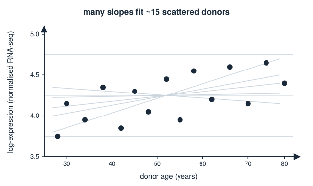
The model: a line plus noise
We assume each donor’s expression \(y_i\) is a straight-line function of age \(x_i\) plus random scatter:
\(a\) — the intercept (expression at \(x=0\), or at a centred reference age),
\(b\) — the slope (change in expression per year of age); this is the biology we care about,
\(\sigma\) — the noise scale: how far points scatter around the line (donor-to-donor variability, measurement error).
This is the same model as ordinary linear regression. The Bayesian and least-squares approaches differ only in what they report about \(a\), \(b\), \(\sigma\).
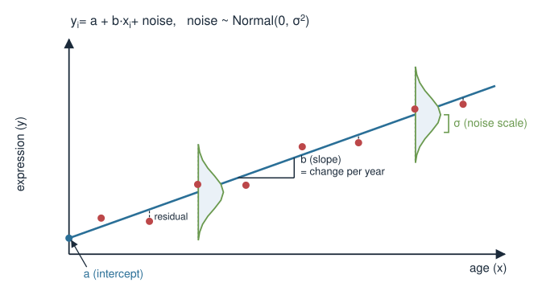
Recap: the least-squares fit
From the linear algebra block, the least-squares line minimises the sum of squared residuals. Stacking the data into a design matrix \(X\) (a column of 1s for \(a\), a column of ages for \(b\)), the best-fit coefficients solve the normal equations:
fit_ls <-lm(expr ~ age, data = donors)coef(fit_ls) # (Intercept) age -> point estimates of a and bconfint(fit_ls) # 95% confidence intervals
This gives one number for \(a\) and one for \(b\) (plus a confidence interval and a p-value). It is fast, familiar, and often enough.
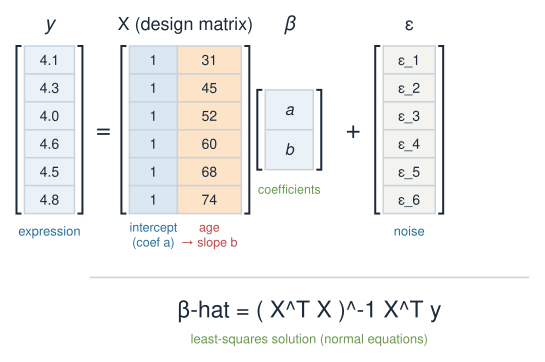
What least squares does — and doesn’t — give
Least squares hands you a point estimate: the single most-consistent \(a\) and \(b\).
A confidence interval and p-value come with it, but their interpretation is subtle: the 95% refers to the procedure over hypothetical repeated experiments, not to this slope.
It gives no direct probability statement about the parameter, e.g. you cannot say “there is a 96% probability the slope is positive.”
With few data points, the point estimate can look deceptively precise.
The Bayesian version fixes exactly these: it returns a full distribution for each parameter, so probability statements and honest prediction bands come for free.
The Bayesian shift: parameters as distributions
Frequentist: \(a\), \(b\), \(\sigma\) are fixed unknown numbers; the data are random.
Bayesian: we describe our uncertainty about\(a\), \(b\), \(\sigma\) with probability distributions, and update them using data via Bayes’ theorem (from the prior/likelihood/posterior unit):
Here \(\theta = (a, b, \sigma)\). The output is the posterior: a distribution over all three parameters at once that says which combinations are plausible given the data.
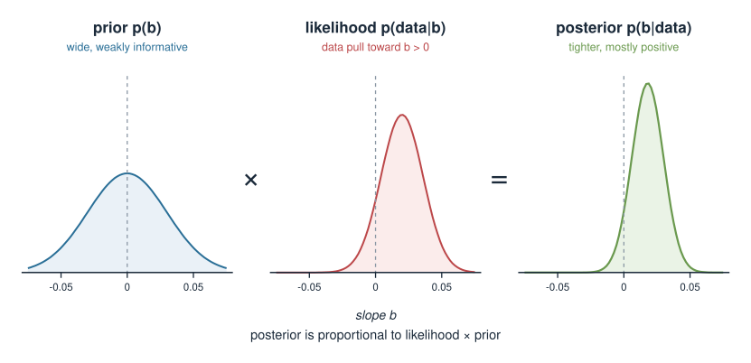
Priors: what we believe before the data
A prior encodes what is plausible for each parameter before seeing this dataset. Weakly-informative priors are a good default — wide enough not to force a conclusion, tight enough to rule out the absurd.
Intercept\(a\): centred, broad — expression at the mean age could be a range of values.
Slope\(b\): centred at 0 (no assumed direction) but on a biologically sane scale — ageing genes change slowly per year, so large slopes are implausible.
Noise\(\sigma\): must be positive, so an Exponential (or half-Normal) prior; mass on small-to-moderate scatter.
A centred prior on \(b\) is honest, not a thumb on the scale: it lets the data move the slope, but resists over-reacting to a few noisy points.
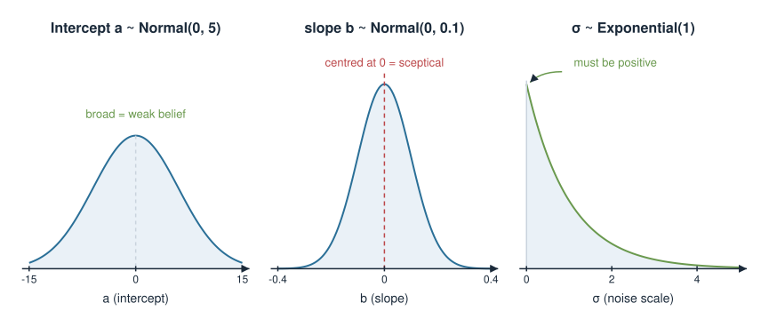
The likelihood: how data pull on the parameters
The likelihood measures how well a given \((a, b, \sigma)\) explains the observed points. Under the line-plus-Gaussian-noise model, each donor contributes a normal density:
\[p(y_i \mid a, b, \sigma) = \mathcal{N}\!\left(y_i \ \middle|\ a + b\,x_i,\ \sigma^2\right)\]
and, assuming donors are independent, the full likelihood is the product:
Maximising this product alone (ignoring priors) gives back the least-squares line — the frequentist and Bayesian fits share the same likelihood, and differ only by the prior.
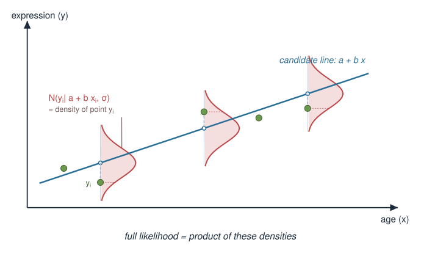
The posterior: prior × likelihood
Multiply prior and likelihood and normalise — the result is the posterior over \((a, b, \sigma)\):
\[p(a, b, \sigma \mid \text{data}) \ \propto\ \left[\prod_{i} \mathcal{N}(y_i \mid a + b x_i,\ \sigma)\right]\ p(a)\,p(b)\,p(\sigma)\]
For a straight line with Gaussian noise there is no simple formula to write down for the full posterior, so we sample from it with MCMC (Markov-chain Monte Carlo).
MCMC returns thousands of draws\((a^{(k)}, b^{(k)}, \sigma^{(k)})\) — a cloud of plausible parameter sets.
The spread of the draws is the uncertainty. Summaries (mean, 95% interval) are just descriptions of that cloud.
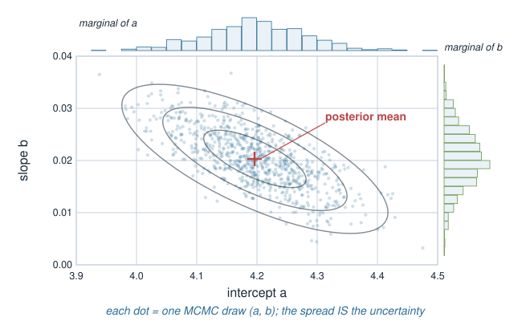
Fitting it in R with brms
brms writes and runs the MCMC for you from an lm-style formula.
library(brms)fit <-brm( expr ~ age, # same formula as lm()data = donors,family =gaussian(), # line + Gaussian noiseprior =c(prior(normal(0, 5), class ="Intercept"),prior(normal(0, 0.1), class ="b"), # slopeprior(exponential(1), class ="sigma") # noise scale ),chains =4, iter =2000, seed =1)
The formula expr ~ age is identical to what you would pass to lm(). The extra arguments declare the priors and how much to sample.
Always check the sampling
Before trusting anything, confirm the MCMC actually converged.
summary(fit) # look at Rhat and ESS for every parameterplot(fit) # trace plots: chains should overlap like "fuzzy caterpillars"
Rhat should be \(\approx 1.00\) for every parameter (chains agree). Values \(\gtrsim 1.01\) signal trouble.
ESS (effective sample size) should be comfortably large (hundreds+).
Trace plots should look like stationary noise with the chains fully overlapping.
If these fail, the numbers are unreliable — re-run with more iterations or reconsider the model, don’t interpret.
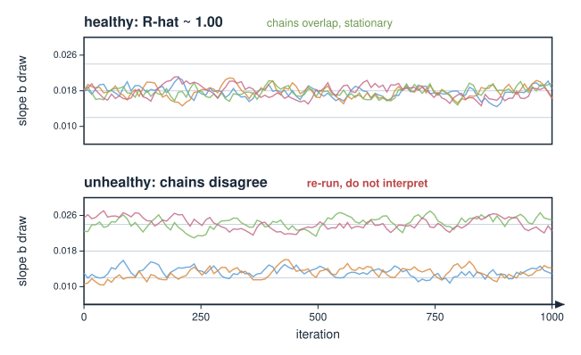
Reading the posterior: coefficients are distributions
posterior_summary(fit) # mean, SE, and 95% credible interval per parameter
Parameter
Estimate
95% credible interval
Intercept \(a\)
4.20
[3.95, 4.45]
slope \(b\)
0.018
[0.001, 0.035]
\(\sigma\)
0.31
[0.22, 0.44]
Each row is a summary of that parameter’s marginal posterior — the shape of the whole distribution, boiled down.
The slope’s 95% credible interval\([0.001, 0.035]\) means: given the data and priors, there is a 95% probability the true per-year change lies in this range.
That is the plain-English reading people wrongly attach to a frequentist CI — here it is actually correct.
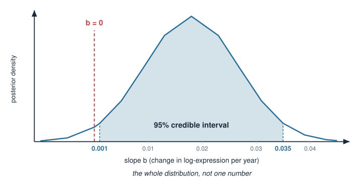
Interpreting a coefficient as a probability
Because the slope is a full distribution of draws, we can ask direct biological questions by counting draws:
draws <-as_draws_df(fit)mean(draws$b_age >0) # P(slope > 0 | data) e.g. 0.98quantile(draws$b_age, c(0.025, 0.975)) # 95% credible interval
mean(draws$b_age > 0) is just the fraction of posterior draws with a positive slope — a genuine probability that the gene’s expression increases with age.
No null hypothesis, no p-value: a probability you can report and act on.
Want the chance the effect exceeds a biologically meaningful size? mean(draws$b_age > 0.01).
This is the payoff: coefficients you can reason about probabilistically.
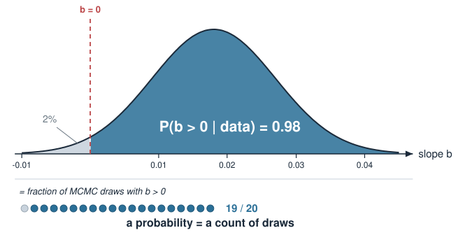
Prediction with uncertainty: two questions
For a new donor aged 70, “predict the expression” is really two questions:
Where is the average line? Uncertainty in \(a\) and \(b\) only → a credible interval for the mean expression at age 70. Narrow.
Where will one new donor land? Adds the noise \(\sigma\) on top → a wider prediction interval for a single observation.
newdata <-data.frame(age =70)# uncertainty in the regression line (mean response)fitted(fit, newdata = newdata) # estimate + 95% credible interval# uncertainty for a brand-new individual (adds sigma)predict(fit, newdata = newdata) # estimate + 95% prediction interval
Confusing these two is a classic error: the second band is always wider because it includes donor-to-donor scatter, not just uncertainty about the line.
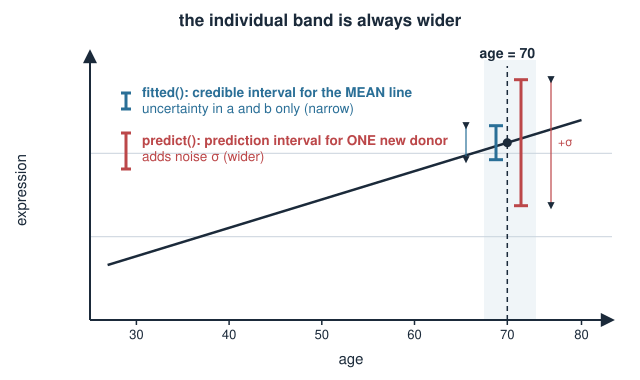
Prediction bands over the whole range
conditional_effects draws the fitted line with its uncertainty across all ages at once:
conditional_effects(fit) # mean line + 95% credible band# to show the wider band for individual new donors:conditional_effects(fit, method ="posterior_predict")
The shaded band is narrowest near the mean age (where the data are densest) and flares out at the extremes — we extrapolate with less confidence.
Every point on the band is a summary of the posterior-predictive draws at that age.
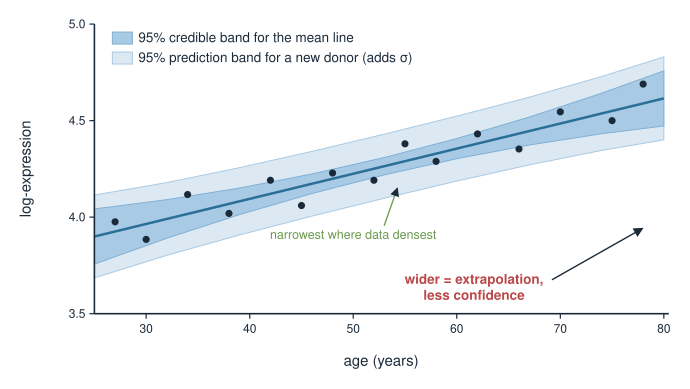
Bayesian vs least squares, side by side
Aspect
Least squares (lm)
Bayesian (brms)
Output per coefficient
one number + CI
full posterior distribution
Slope reading
estimate + p-value
\(P(b>0\mid\text{data})\) directly
Interval meaning
long-run procedure
probability about this parameter
Prior knowledge
hard to include
built in as the prior
Small samples
can look over-precise
prior regularises honestly
Prediction
interval formulae
posterior-predictive draws
Cost / speed
instant
MCMC, slower; needs diagnostics
When the priors are flat
—
posterior peak = least-squares fit
Same line, same likelihood — Bayes keeps the whole distribution where least squares keeps only its peak.
Summary
Idea
Key fact
Model
\(y = a + b\,x + \varepsilon\), \(\varepsilon\sim\mathcal N(0,\sigma^2)\) — same as ordinary regression
Bayesian shift
parameters \(a,b,\sigma\) get distributions, not single numbers
Bayes’ theorem
posterior \(\propto\) likelihood \(\times\) prior
Prior
weakly-informative; slope centred at 0 = sceptical, regularising
Likelihood
Gaussian; maximised alone → least-squares line
Posterior
sampled by MCMC; draws = a cloud of plausible \((a,b,\sigma)\)
Coefficient reading
\(P(b>0\mid\text{data})\) = fraction of draws with \(b>0\)
Credible interval
direct probability the parameter lies in the range
Prediction
mean band (narrow) vs individual band (wider, adds \(\sigma\))
Diagnostics
check Rhat\(\approx 1\) and trace plots before interpreting
Builds on: least-squares fitting and the normal equations (linear algebra block); prior / likelihood / posterior (Bayes’ theorem). Generalises to: swapping family = gaussian() for a count family, linking to the Poisson / negative-binomial models in the distributions block.